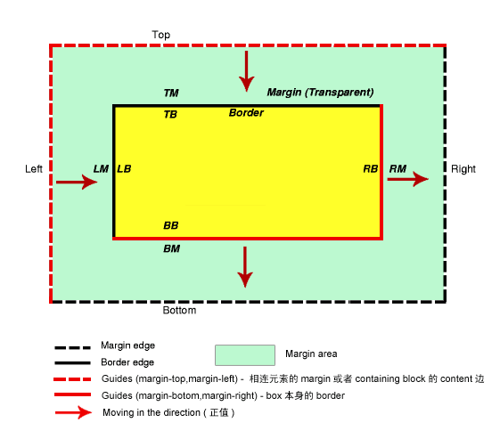

简介
在平常开发过程中经常用到margin属性，但是也会遇到很多的问题，比如说**margin 重叠（BFC）**、**负 margin**等等问题，下面就一个一个来记录问什么会这样。
标准盒模型
要了解margin就要先了解css中的**盒子模型（Box Model）**，**标准盒模型**可以分为：外边距(margin)、边框（border）、内边距（padding）、内容区域（content）。在标准盒模型中平常所说道的高度只是content的高度，不包含border的高度，而在ie 盒模型中是把border算在内的。
margin 属性
margin 有四个属性**margin-top**、**margin-left**、**margin-bottom**、**margin-right**，它们的值可以为**百分比**、**数值（左右可为负数）**、**em、rem、vh、vw**、**auto**等等。
margin 与容器尺寸
元素尺寸：① 可视尺寸 clientWidth（标准）；② 占据尺寸
margin 与可视尺寸：**① 适用于没有设定 width/height 的普通 block 元素；② 只适用于水平方向尺寸**
margin 与占据尺寸：**①block/inline-block 水平元素均适用；② 与有没有设定 width/height 无关；**
③ 适用于水平方向和垂直方向。可用于页面的上下留白（padding 兼容性不好）。
margin 与可视尺寸
特性：
- 适用于没有设定
width/height的普通block元素 - 只适用于水平方向尺寸
应用：一侧定宽自适应
1 | <img width="150px" style="float:left" /> |
margin 与占据尺寸
特性：
block、inline-block水平元素均适应- 与有没有设定
width、height值无关 - 适应于水平方向和垂直方向
margin 与百分比单位
- 普通元素的百分比：相对于容器宽度计算。
- 绝对定位元素的百分比：相对于第一个定位的祖先容器的宽度计算的。
margin 中的重叠
margin 重叠通常特性
block水平元素（不包括float和absolute元素）- 不考虑
writing-mode，只发生垂直方向（margin-top/margin-bottom）
margin 重叠的 3 种情景
- 相邻的兄弟元素
- 父级和第一个/最后一个子元素
- 空的 block 元素
父子 margin 重叠其他条件
margin-top 重叠
| margin-top 重叠 | 解决 |
|---|---|
| 父元素非块状格式化上下文元素 | 设置父元素overflow：hidden |
父元素没有border-top设值 |
设置父元素border |
父元素没有padding-top值 |
设置父元素padding-top |
父元素和第一个子元素之间没有inline元素分隔 |
插入一个内联元素如空格&bsp; |
margin-bottom 重叠
- 父元素非块状格式化上下文元素
- 父元素没有
border-bottom设置 - 父元素没有
padding-bottom值 - 父元素和最后一个子元素之间没有
inline元素分隔 - 父元素没有
height相关声明
空 block 元素 margin 重叠
条件限制：
- 元素没有
border设置 - 元素没有
padding值 - 里面没有
inline元素 - 没有
height、或者min-height
重叠的计算规则
- 正正取大值
- 正负值相加
- 负负最负值
理解 CSS 中的 margin:auto
margin:auto的作用机制：自动分配剩余空间
垂直居中方法(margin 实现)
writing-mode
更改流为垂直方向，但是水平居中失效
1 | .father { |
绝对定位元素的 margin:auto 居中
1 | .father { |
margin 负值
为了方便理解负值margin，我们引入参考线的定义，参考线就是就是margin移动的基准点，而margin的值就是移动的数值。margin的参考线有两类，一类是top、left，它们以外元素作为参考线;
另一类是right、bottom，它们以自身作为参考线。
简单点说就是：
top负值就是以包含块(Containing block)内容区域的上边或者上方相连元素margin的下边线为参考线;left负值就是以包含块(Containing block)内容区域的左边或者左方相连元素margin的右边为参考线;right负值就是以元素本身border的右边为参考线；bottom负值就是以元素本身border的下边为参考线；
另外关于包含块的定义具体请参考 KB008 包含块(Containing block)。

公用代码
1 | <style> |
margin-top 和 margin-left 负值
margin-top
修改 css 代码如下：
1 | .two { |
效果图如下：
当设置.two的div的margin-top: -50px的时候，它的参考线是div.one的下边，整个div.two向上移动-50px使得div.two覆盖div.one。
margin-left
修改 css 代码如下：
1 | .box div { |
效果图如下：
当设置.two的div的margin-left: -50px的时候，它的参考线是div.one的右边线，整个div.two向左移动-50px使的div.two覆盖div.one。
margin-right 和 margin-bottom 负值
margin-right
修改 css 代码如下：
1 | .one { |
效果图如下：
当设置.one的div的margin-right: -50px的时候，它的参考线是div.one的右边线，整个div.one向左收缩-50px使的div.two覆盖div.one。
margin-bottom
修改 css 代码如下：
1 | .box div { |
效果图如下：
当设置.one的div的margin-bottom: -50px的时候，它的参考线是div.one的下边线，整个div.one向上收缩-50px使的div.two覆盖div.one。
实际应用
margin 负值下的两端对齐：
1 | <style> |
margin 负值下的等高布局：
margin 负值下的两栏自适应布局：
margin 无效情形解析
inline水平元素的垂直margin无效前提：
- 非替换元素，例如不是
<img>元素； - 正常书写模式。
margin重叠display:table-cell与margin：display:table-cell/display:table-row等声明的margin无效。position:absolute与margin：绝对定位元素未设置定位方向的margin值”无效“。例如，img{top:10%}的margin-top有效其他均无效。- 内联特性导致的
margin无效：
了解 margin-start/margin-end 属
-webkit-margin-start、-webkit-margin-end
- 正常的流向，
margin-start等同于margin-left，两者重叠不累加 - 如果水平流是从右往左，
margin-start等同于margin-right - 在垂直流下（
writing-mode:vertical-*;）,margin-start等同于margin-top
margin-collaps
1 | -webkit-margin-collaps: <collaps> | <discard> | <separate>; |
collaps,默认，重叠discard，取消重叠，使margin无效separate，取消重叠，不合并
总结
在本篇文章中介绍主要的margin百分比、margin重叠条件、margin在盒模型中的区域，但是本文总结的margin负值并不是全部情况，比如说div.two设置为margin-right: -50px为什么不会收缩自己的宽度等等。希望大家多多做补充。
参考
CSS 深入理解之 relative
CSS 深入理解之 margin
CSS 深入理解学习笔记之 margin
浅谈 margin 负值